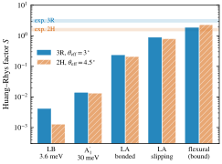
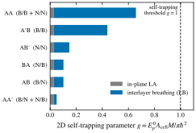

Moiré polarons
Note evaluation and go/no-go estimates
A check of a derivation note on moiré electron–phonon coupling and polarons, followed by two feasibility estimates: interlayer exciton polarons in MoSe₂/WSe₂, and exciton self-trapping at twisted hBN interfaces.
2026-10-21. This page is unrelated to the isolated-defect project. The check of the derivation and the MoSe₂/WSe₂ estimate are complete; for twisted hBN there are only preliminary results, the 6×6 supercell and HSE calculations are still queued, and the conclusions may change. All numbers come from PBE (+D3) calculations and simplified models, have not been independently checked, and are meant to decide directions, not as quantitative predictions.
1. Conclusion
- The algebra of the derivation is correct. All main equations were checked one by one, and three groups of them were verified numerically on a one-dimensional toy moiré chain, agreeing with direct calculations to machine precision. What needs correcting are two physical statements, not the algebra.
- As a method, the moiré electron–phonon vertex is no longer new. In 2026 several groups already compute moiré electron–phonon coupling from first principles. What remains open is the physics itself: whether moiré-scale self-trapped polarons exist, and which channel drives them.
- Excitons are more promising than single carriers. The exciton centre of mass is heavier, so its moiré bands are flatter. At the same potential depth, the contact coupling needed to reach is 4–1000 times lower.
- MoSe₂/WSe₂ interlayer excitons: conditional GO. The coupling comes almost entirely from the soft in-plane acoustic and flexural modes, with a total Huang–Rhys factor of about 1–3, the same order as the experimental fits of 1.6–3.1; optical and interlayer breathing modes are negligible. Polaron-driven "self-trapping" on the moiré scale appears only in a narrow window, R stacking at 2°–2.5°.
- Twisted hBN: NO-GO for linear coupling, nonlinear case open. For all six stackings the linear contact coupling is too weak for self-trapping; stackings with homopolar B/B or N/N contacts couple most strongly. In 3×3 supercells the ΔSCF triplet relaxes by 0.09–0.23 eV, but the distortion extends over the whole supercell and the spin is not localized: this is a periodic response, not a localized self-trapped exciton. The Stokes shifts of 0.3–0.55 eV are far below the experimental red shift of about 2 eV. Whether a small, deep self-trapped state exists must wait for larger supercells and hybrid functionals.
2. Check of the derivation note
The note under evaluation is an unpublished derivation (version of 2026-10-20). It proceeds in three steps: it builds the moiré electron–phonon vertex from the response of the pristine cell (the pristine response approximation, PRA); writes the Sio–Giustino polaron equations in the moiré basis; and reduces them to a Holstein model on the moiré scale. The target system is WSe₂/WS₂, and the aim is to explain the moiré polaronic electron crystals reported by Arsenault et al. [1].
2.1 Numerical checks
A one-dimensional toy moiré chain: each moiré cell contains 4 pristine cells, with 6 moiré cells in total; hopping and on-site energies are modulated by the moiré pattern; the electron–phonon coupling includes SSH-type and strain-type terms; electronic states and phonons are given random phase gauges. Results of the three checks:
- PRA master formula for the moiré vertex: 60 random matrix elements deviate from the direct calculation by .
- Sio–Giustino equations in the moiré basis: compared with a real-space Landau–Pekar minimization, the energies differ by less than and the distortions by .
- Effective interaction kernel in the moiré Wannier basis: the mode sum agrees with the real-space result to .
In the toy model the PRA is exact by construction, so these checks verify only the algebra and conventions, not the PRA itself.
2.2 Correction 1: acoustic-type channels are non-analytic at
For deformation-potential (acoustic, strain) coupling, a uniform translation at does not couple, but tends to a finite constant as . The effective intersite interaction therefore obeys a sum rule:
Here is the deformation potential, the mass per cell, the sound velocity and the number of cells. The correction is negligible for every pair of sites, but its sum exactly cancels the diagonal term. A periodic relaxation at fixed cell therefore misses the acoustic contribution to the isolated polaron entirely. In the toy model , whereas : the periodic relaxation recovers only 15% of the isolated-polaron energy . This term must be treated separately when numbers from periodic DFT (for example the 16 meV of Arsenault et al.) are used to infer the isolated polaron.
2.3 Correction 2: the moiré enhancement holds only for deep potentials
The note argues from and that self-trapping is easier in a moiré system:
This is correct asymptotically, but the prefactor contains the Wannier participation number (counted in pristine cells), which is of order –. The table below gives results for a triangular continuum model with period 8 nm, and eV:
| Depth (meV) | (meV) | ||
|---|---|---|---|
| 5 | 14.0 | 444 | 0.25 |
| 8 | 9.7 | 312 | 0.52 |
| 12 | 5.7 | 227 | 1.2 |
| 20 | 2.0 | 157 | 5.1 |
| 30 | 0.6 | 121 | 23 |
The moiré system is favourable only for meV. For moiré bandwidths of 10–15 meV the self-trapping threshold drops by at most a factor of 1.7–3.5. With the note's estimate for WSe₂/WS₂, – meV, one gets , so self-trapping is actually harder in the moiré system.
2.4 Other comments
- For WSe₂/WS₂, about 90% of the PBE distortion is out of plane. If it is mainly a displacement of whole layers, its coupling to the band edges can come only from the bilayer (interlayer) channel, which is exactly what the monolayer PRA master formula leaves out.
- Most moiré phonons satisfy . In the anti-adiabatic regime at weak and intermediate coupling, the adiabatic Sio–Giustino equations give no polaronic displacement. The useful output is the vertex and the moiré-scale Hubbard–Holstein parameters, to be passed to non-adiabatic solvers.
- For the polaron ground state, a real-space Landau–Pekar self-consistency in a supercell of a few moiré cells is much simpler than computing all vertices in the moiré Bloch basis.
2.5 Competition
Related work that appeared in 2026:
- Abramovitch and Bernardi: atomic-scale electron–phonon potentials fitted from first principles, used to compute moiré electron–phonon coupling and transport in twisted bilayer graphene down to 1.6° [2].
- Mao et al.: interference-enhanced electron–phonon coupling from interlayer breathing modes in moiré semiconductors [3].
- Uzundal et al.: moiré phonons and layer-selective exciton–phonon coupling in WS₂/WSe₂ [4].
- Ramos-Alonso and Ochoa: charged moiré phonons in twisted bilayer graphene [5].
- Del Grande and Strubbe: multiscale calculation of light-induced structural changes in low-angle twisted bilayer WSe₂ [6].
No first-principles calculation of moiré-scale self-trapped polarons was found.
3. Why turn to excitons
The first draft of the evaluation considered only the self-trapping of a single electron or hole. Excitons have three advantages:
- A heavier centre of mass gives flatter moiré bands. Taking the centre-of-mass mass of a point exciton as , in the same continuum model the exciton's moiré band is 3–600 times narrower than the hole's, and the contact coupling needed for is 4–1000 times lower (Figure 1). For example, at a depth of 10 meV a hole needs about 1 eV, whereas an exciton needs only 0.03–0.13 eV.
- The couplings of an interlayer exciton do not cancel. The electron and hole sit in different layers, so modes specific to each layer do not cancel, and the interlayer distance changes both the band offset and the binding energy. The interlayer electron–hole attraction itself can also bend the two layers locally towards each other [7].
- Direct comparison with spectra is possible. Most lattice modes are in the anti-adiabatic regime (), and the observables are the Huang–Rhys factors of the individual modes, phonon sidebands and the Stokes shift:
![Line plot with a logarithmic vertical axis: the horizontal axis is the moiré potential depth V from 0 to 50 meV; the vertical axis is the contact coupling needed for λ_M equal to 1, from 10 to the minus 5 to 10 eV. The hole curve (mass 0.45) falls from about 3 eV at 5 meV to about 0.003 eV at 50 meV; the two exciton centre-of-mass curves (masses 0.8 and 1.1) lie one to three orders of magnitude lower and fall faster. A grey band between 0.06 and 0.2 eV marks the typical size of intralayer deformation-potential couplings.](../results/moire-mass-scaling.svg)
4. MoSe₂/WSe₂ interlayer excitons
This system was chosen for two reasons: the lattice mismatch is only about 0.2%, so each stacking can be computed in a 1×1 bilayer cell; and experimental data exist for phonon sidebands and Huang–Rhys factors [8].
4.1 Methods
- DFT: Quantum ESPRESSO 7.3, PBE+D3(BJ), SG15 norm-conserving pseudopotentials, 70 Ry, 12×12 k grid, two-dimensional Coulomb cutoff, a common in-plane lattice constant of 3.285 Å.
- Monolayers: A₁′ frozen phonon; ±1% biaxial and uniaxial strain, with vacuum-level alignment for the absolute deformation potentials and ; effective masses at K with spin–orbit coupling.
- Bilayers: Three high-symmetry stackings each for R and H, with relaxed z coordinates; rigid shifts of the top layer by ±0.05 and ±0.10 Å give the derivative of the K-point gap with respect to the interlayer distance and the interlayer stiffness. The valence-band top is in WSe₂ and the conduction-band bottom in MoSe₂, a type-II alignment.
- Exciton model: The binding energy of the interlayer exciton (IX) is computed with a bilayer Keldysh model ( nm, ) and is about 78–80 meV. The centre-of-mass moiré potential takes of the three stackings, fitted to the first shell and smoothed by the exciton's internal form factor.
- Couplings: Interlayer breathing (LB) and A₁′ are treated as contact-type static responses; the in-plane acoustic mode (LA) uses a two-dimensional dispersion integral in two limits, layers sliding against each other and layers bonded together; the flexural mode is taken only in the bonded limit, as an upper bound.
4.2 DFT results
| Quantity | MoSe₂ | WSe₂ |
|---|---|---|
| Gap at K, without / with spin–orbit coupling (eV) | 1.551 / 1.444 | 1.673 / 1.391 |
| (meV) | 29.5 | 30.3 |
| Absolute deformation potentials (eV) | −7.55, −2.40 | −8.74, −2.06 |
| (N/m) | 116, 24 | 127, 22 |
| Effective masses at K, () | 0.52, 0.60 | 0.42, 0.37 |
| Stacking | Metal–metal distance (Å) | Gap at K (eV) | (meV/Å) | (eV/Ų) | Relative energy (meV/cell) |
|---|---|---|---|---|---|
| R AA | 7.05 | 1.342 | −41 | 0.42 | +92 |
| R AB | 6.43 | 1.299 | +78 | 0.48 | +1 |
| R BA | 6.43 | 1.427 | −176 | 0.48 | 0 |
| H AA | 6.53 | 1.357 | −35 | 0.40 | +28 |
| H AB | 6.44 | 1.359 | −41 | 0.53 | 0 |
| H BA | 7.01 | 1.344 | −46 | 0.42 | +91 |
After subtracting the binding energy, the moiré potential of the interlayer exciton is about 128 meV deep for R stacking (lowest at AB) and only about 14 meV for H stacking (lowest at BA). The interlayer breathing mode has – meV. changes sign between stackings, so the LB channel uses the value at the stacking where the exciton sits.
4.3 Moiré bandwidth and twist angle
![Line plot with a logarithmic vertical axis: the horizontal axis is the effective twist angle from 1 to 4.5 degrees; the vertical axis is energy from 10 to the minus 4 to 100 meV. The exciton bandwidth for R stacking rises steeply from about 0.0005 meV at 1 degree to about 38 meV at 4.5 degrees; for H stacking it rises from about 0.4 meV to about 42 meV. Two shaded bands show the range of polaron energies, about 0.2 to 2 meV, almost independent of the twist angle. The R-stacking bandwidth curve crosses the polaron-energy band near 2 degrees. Vertical lines at 3 and 4.5 degrees mark the 3R and 2H samples.](../results/tmd-ix-twist.svg)
| (nm) | R: (meV) | R: | H: (meV) | H: | |
|---|---|---|---|---|---|
| 1.0° | 18.8 | 0.42 | 2.3 | ||
| 2.0° | 9.4 | 1.3 | 2.5 | 6.6 | 0.18 |
| 3.0° | 6.3 | 11 | 0.27 | 18 | 0.10 |
| 4.5° | 4.2 | 38 | 0.09 | 42 | 0.07 |
- The smallest length scale of the electron and hole densities is set by the internal structure of the exciton (radius about 3 nm), so hardly depends on the twist angle (about 1.3–1.7 meV for R stacking); what changes with the twist angle is mainly .
- For twist angles the exciton is already trapped by the moiré potential, which is not "self"-trapping; for the exciton is delocalized. Only R stacking at 2°–2.5° is a window in which the polaron narrows a mobile exciton band or even localizes it. H stacking has a shallow potential and traps only for effective twist angles .
- In this window the phonon energies exceed the hopping energy (anti-adiabatic), and the effect is a bandwidth reduction (), not adiabatic self-trapping.
4.4 Coupling by channel and comparison with experiment
In hBN-encapsulated MoSe₂/WSe₂, Soubelet et al. observed equally spaced emission peaks about 0.8 meV apart, attributed them to interlayer exciton polarons, and fitted Huang–Rhys factors of for the 3R sample and for the 2H sample [8]. In that paper's angle convention, the 2H sample has θ ≈ 4.5° and the 3R sample θ ≈ 57°, i.e. they deviate from H and R stacking by 4.5° and 3°, respectively. The comparison below uses these two effective twist angles.


| Channel | R 3°: (meV) | R 3°: | H 4.5°: (meV) | H 4.5°: | Characteristic phonon energy |
|---|---|---|---|---|---|
| Interlayer breathing (LB) | 0.015 | 0.0041 | 0.0045 | 0.0013 | 3.6 meV, discrete |
| A₁′ | 0.41 | 0.014 | 0.40 | 0.013 | 30 meV, discrete |
| LA, layers sliding | 1.09 | 0.88 | 1.06 | 0.80 | 1–2 meV, continuum |
| LA, layers bonded | 0.29 | 0.23 | 0.28 | 0.21 | 1–2 meV, continuum |
| Flexural, bonded limit (upper bound) | 0.65 | 1.8 | 0.63 | 2.3 | 0.1–0.4 meV, infrared sensitive |
| Experiment | — | 3.1 ± 0.4 | — | 1.6 ± 0.2 | About 0.8 meV, equally spaced discrete peaks |
- When the layers slide, LA is strong and the flexural channel vanishes; when they are bonded, LA is weak (the electron and hole deformation potentials have the same sign and partly cancel, and the modulus doubles) and the flexural channel opens. In both limits the total of the soft modes is about 1–3, the same order as experiment.
- The discrete 0.8 meV peaks require a narrow mode, for example an acoustic or flexural branch that becomes flat at the edge of the small Brillouin zone after moiré folding. This estimate uses pristine dispersions, so it gives the order of magnitude of the coupling but not the peak positions.
- The estimated R/H ratio is about 1.1 in the sliding limit and about 0.8 in the bonded limit; neither reproduces the experimental ratio of about 1.9.
- The Stokes shift is about 3 meV, or about 4 meV including the flexural upper bound.
4.5 Verdict
Conditional GO. The exciton direction is worth pursuing, but the target should change to the dressing of moiré-bound interlayer excitons by soft moiré phonons (folded acoustic branches, flexural, interlayer shear and phason modes), and to polaronic bandwidth reduction and transport in the small-twist window. Moiré self-trapping driven by optical or interlayer breathing modes does not occur in this system. The largest uncertainty is interlayer mechanics: whether the layers are bonded or sliding, lattice reconstruction and hBN encapsulation. These set the split between the LA and flexural channels and also the sideband energies. The model of Knorr et al. predicts polaronic band flattening of moiré excitons and can serve as a comparison [9].
5. Twisted hBN: preliminary results
Two motivations. First, hole polarons in monolayer and bulk hBN have a first-principles theory [10]. Second, in strongly twisted hBN Roux et al. observed emission peaked near 4 eV and about 2 eV wide, about 2 eV below the 6.25 eV gap, and attributed it to exciton self-trapping at the interface; at large twist angles, homopolar B–B and N–N contacts are densely distributed over the interface [11]. The questions are whether the interface stacking can self-trap an exciton, and whether self-trapping can explain a red shift of about 2 eV.
5.1 Methods
- DFT: Quantum ESPRESSO 7.3, PBE+D3(BJ), PseudoDojo norm-conserving pseudopotentials, 80 Ry, in-plane lattice constant 2.504 Å, two-dimensional Coulomb cutoff.
- Monolayer and bilayers: Gap at K, deformation potentials, and effective masses of the monolayer; six 1×1 bilayer stackings (parallel AA, AB, BA; antiparallel AA′, A′B, AB′) with relaxed interlayer distances, and rigid shifts of the top layer for and the interlayer stiffness .
- Linear criterion: A two-dimensional contact model. The exciton centre of mass is a Gaussian state , and the coupling is smoothed over the internal exciton size : For , is the collapse (self-trapping) condition; for the energy is lowest at and the exciton stays free. is the sum of the LA and LB binding energies of an exciton fully localized in one cell.
- Nonlinear ΔSCF: The triplet (total moment 2, small Gaussian smearing) is computed in 3×3 bilayer supercells (36 atoms, Γ point, which contains the K point of the primitive cell). A pair of facing atoms at the interface is moved towards each other by 0.35 Å each (strong seed: 0.75 Å), and the structure is relaxed from this seeded distortion. Four energies give where denotes the flat ground-state structure and the relaxed triplet structure; the Stokes shift is . A monolayer control was also run.
5.2 Linear criterion
For monolayer hBN (PBE) the gap at K is 4.71 eV, and , so and . A two-dimensional hydrogen model gives a binding energy of 0.9–1.5 eV and a 1s radius of 2.6–3.4 Å (–). The contact coupling of the in-plane LA mode is eV, the same for all stackings.


| Stacking | Facing atoms | Interlayer distance (Å) | Relative energy (meV/cell) | Gap at K (eV) | (eV/Å) | (eV/Ų) | (meV) | |
|---|---|---|---|---|---|---|---|---|
| AA | B/B, N/N | 3.62 | 20.6 | 4.19 | 0.86 | 0.21 | 8.5 | 0.66 |
| A′B | B/B | 3.38 | 3.6 | 4.19 | 0.76 | 0.26 | 9.3 | 0.44 |
| AB′ | N/N | 3.59 | 18.6 | 4.52 | 0.38 | 0.22 | 8.6 | 0.15 |
| AB | B/N | 3.33 | 0 | 4.57 | 0.34 | 0.28 | 9.8 | 0.10 |
| BA | N/B | 3.33 | 0 | 4.57 | 0.34 | 0.28 | 9.8 | 0.10 |
| AA′ | B/N, N/B | 3.33 | 0.7 | 4.76 | −0.19 | 0.30 | 10.0 | 0.05 |
- All stackings have : the linear contact coupling is too weak to self-trap the exciton.
- Stackings with homopolar contacts (B/B, N/N) couple most strongly: their gap is more sensitive to the interlayer distance and their interlayer stiffness is smaller. For AA and A′B, which contain B/B contacts, the of the interlayer breathing channel is 19–29 times that of the natural AA′ stacking; for AB′, with only N/N contacts, it is about 5 times larger. This agrees qualitatively with the trend observed by Roux et al.: the larger the twist angle, the denser the homopolar contacts at the interface, and the stronger the 4 eV emission.
- The linear part does not include the polar optical-phonon (Fröhlich) channel. For a neutral exciton the long-range couplings of the electron and hole largely cancel, so this is expected to be small, but it was not computed.
5.3 ΔSCF triplets (3×3 supercells)
![Two stacked bar charts; the horizontal axis lists four stackings AA, A-prime B, AA-prime and A B-prime (marked as slid and hatched). Top, energies: triplet relaxation energies of about 0.23, 0.09, 0.10 and 0.51 eV, and Stokes shifts of about 0.55, 0.30, 0.34 and 0.68 eV; a shaded band from 1.75 to 2.25 eV marks the red shift observed by Roux et al., far above all bars. Bottom, change of the interlayer distance: for AA the supercell average decreases by about 0.36 angstrom and the seeded pair by about 0.44 angstrom; for A-prime B by 0.16 and 0.25 angstrom; for AA-prime the interlayer distance instead increases, by about 0.11 and 0.05 angstrom.](../results/hbn-triplet.svg)
| Stacking | (eV) | Stokes shift (eV) | Average (Å) | Seeded pair (Å) | Interlayer sliding (Å) | Spin participation ratio |
|---|---|---|---|---|---|---|
| AA, B–B seed | −0.229 | 0.550 | −0.36 | −0.44 | 0.00 | 0.78 |
| A′B | −0.085 | 0.296 | −0.16 | −0.25 | 0.00 | 0.79 |
| AA′ | −0.096 | 0.344 | +0.11 | +0.05 | 0.01 | 0.49 |
| AB′ (artifact) | −0.506 | 0.683 | −0.39 | −0.38 | 1.60 | 0.78 |
- The result does not depend on the seed. For AA, seeding an N–N or a B–B pair with 0.35 or 0.75 Å always converges to the same energy, −0.229 eV; the two seeds for A′B also give the same result. The strong seeds found no covalent minimum such as interlayer bond formation.
- The distortion extends over the whole supercell. For AA the interlayer distance shrinks by 0.36 Å throughout, and only by about 0.08 Å more at the seeded pair; the spin participation ratio is 0.78, i.e. the spin is spread over about 28 atoms. This is the uniform response to a periodic triplet density (one exciton per 9 primitive cells), not a localized self-trapped exciton. For a delocalized exciton the energy of such a uniform response decreases as with the supercell area and vanishes in the dilute limit.
- For AA′ the interlayer distance increases instead. With the default seed, the triplet SCF of the flat structure landed in a state 35 meV higher; the table uses the lower reference obtained with the strong seed.
- AB′ is an artifact. The top layer slid as a whole by 1.6 Å towards a stacking close to A′B (B over B). This is a global change of a high-energy, unstable stacking in a small supercell and has nothing to do with the exciton.
- The monolayer control shows no self-trapping. In a 3×3 monolayer triplet, after one N atom was pushed 0.30 Å out of the plane, the distortion fell back to 0.09 Å within 8 steps while the energy decreased monotonically, still 7 meV above the flat triplet (the SCF of step 9 did not converge and the calculation stopped).
- The energies fall far short. The Stokes shifts of 0.3–0.55 eV are much smaller than the observed shift of about 1.75–2.25 eV.
5.4 Why no conclusion can be drawn yet
- The supercell is too small. The 3×3 supercell is 7.5 Å on a side and holds one exciton per 9 primitive cells, so it cannot separate a localized state from a uniform response. The hBN hole polarons computed by Sio and Giustino have formation energies of only about 14–16 meV (−13.6 meV in bulk, −15.9 meV in the monolayer) and full widths at half maximum of 10–15 Å; the convergence tests for the monolayer use effective in-plane supercells from 42×42 to 152×152 and extrapolate to infinite size, and a direct supercell calculation of the bulk would need at least about 36,000 atoms [10]. Such large polarons do not fit into small supercells, and their energy is two orders of magnitude below 2 eV, so they cannot explain the 4 eV emission.
- What is needed is a small, deep state. If the 4 eV emission comes from self-trapping, it should be a strongly localized deep state. The delocalization error of PBE tends to wash out such states, so hybrid functionals are needed.
- Other approximations. A triplet replaces the singlet exciton; the PBE gaps (4.2–4.8 eV) are about 1.5–2 eV below experiment; there is no GW/BSE; the linear part has no Fröhlich channel.
5.5 Calculations in progress
- 6×6 supercells (144 atoms): AA (B–B seed) and AA′. Criterion: a relaxation energy about 1/4 of the 3×3 value indicates a periodic response; an essentially unchanged value indicates a localized state.
- HSE06 single points: The flat and PBE-relaxed structures of AA (B–B seed) and A′B, to test whether the hybrid functional deepens the self-trapping.
Both sets of calculations are queued in the shared partition on Anvil. When the results arrive, this section will be updated and an entry added to the discussion log.
5.6 Preliminary verdict
Linear coupling: NO-GO. All stackings have . Small, deep self-trapped state: open. The 3×3 PBE results do not support localized self-trapping, but the supercell is too small and the functional is not suitable, so it cannot be excluded. If this direction is pursued, we suggest solving the exciton-polaron equations in k space with EPW on a small commensurate cell at large twist (21.8°, 28 atoms) [12], together with hybrid-functional ΔSCF in supercells of at least 6×6.
6. Next steps
- MoSe₂/WSe₂: Compute moiré phonons at 1°–5° (folded acoustic branches, flexural, interlayer shear and phason modes, including lattice reconstruction and hBN encapsulation), use the present deformation potentials to compute independent-boson sidebands, and compare directly with the discrete 0.8 meV peaks and with ; determine whether the layers are bonded or sliding.
- Twisted hBN: Wait for the 6×6 and HSE results, then decide whether to do the k-space exciton-polaron calculation.
- Carrier channel (the note's original target): First make the same kind of estimate for WSe₂/WS₂ (bilayer , interlayer stiffness, and comparison with and ); only if it passes, move to the full first-principles workflow.
7. Data
- moire-mass-scaling.csv: bandwidths, Wannier participation numbers and required couplings in the continuum model (Figure 1).
- tmd-ix-twist-scan.csv: bandwidths of the MoSe₂/WSe₂ interlayer exciton versus twist angle, with polaron energies and Huang–Rhys factors by channel (Figures 2 and 3).
- tmd-ix-dft.json: DFT parameters of MoSe₂/WSe₂ monolayers and bilayers, and the full results at the twist angles of the two samples.
- hbn-stackings.csv: parameters and for the six hBN bilayer stackings (Figure 4).
- hbn-triplet-3x3.csv: all ΔSCF triplet calculations in 3×3 supercells, including the different seeds (Figure 5).
- hbn-dft.json: full hBN results for the monolayer, bilayers, linear criterion, triplet geometry analysis and monolayer control.
The figures are generated by scripts/plot_results.py from these files. DFT inputs, raw outputs and calculation scripts are kept on Anvil and are not in this repository.
8. References
- E. A. Arsenault et al., Two-Dimensional Moiré Polaronic Electron Crystals, Phys. Rev. Lett. 132, 126501 (2024). Experiment on moiré polaronic electron crystals in WSe₂/WS₂, with periodic DFT calculations.
- D. J. Abramovitch and M. Bernardi, Predicting electron-phonon coupling and electronic transport at the moiré scale in twisted bilayer graphene, arXiv:2603.14800 (2026). Preprint.
- N. Mao et al., Interference-Enhanced Large Electron-Phonon Coupling from Raman-active Breathing Modes in Moiré Semiconductors, arXiv:2607.11425 (2026). Preprint.
- C. B. Uzundal et al., Moiré Phonons and Emergent Exciton-Phonon Coupling in a Moiré Heterobilayer, arXiv:2606.28185 (2026). Preprint.
- A. Ramos-Alonso and H. Ochoa, Charged moiré phonons in twisted bilayer graphene, Phys. Rev. B 114, L051106 (2026).
- R. R. Del Grande and D. A. Strubbe, Multi-scale calculation of light-induced structural changes in low-angle twisted bilayer WSe₂, arXiv:2604.28143 (2026). Preprint.
- Z. A. Iakovlev, M. A. Semina, M. M. Glazov and E. Ya. Sherman, Flexural deformations and collapse of bilayer two-dimensional crystals by interlayer excitons, Phys. Rev. B 105, 205305 (2022).
- P. Soubelet, A. Delhomme, E. Blundo, A. V. Stier and J. J. Finley, Polarons shape the interlayer exciton emission of MoSe₂/WSe₂ heterobilayers, Nat. Commun. 16, 8735 (2025).
- W. Knorr, S. Brem, G. Meneghini and E. Malic, Polaron-induced changes in moiré exciton propagation in twisted van der Waals heterostructures, Nanoscale 16, 8996 (2024).
- W. H. Sio and F. Giustino, Polarons in two-dimensional atomic crystals, Nat. Phys. 19, 629 (2023).
- S. Roux et al., Exciton Self-Trapping in Twisted Hexagonal Boron Nitride homostructures, Phys. Rev. X 15, 021067 (2025).
- Z. Dai, C. Lian, J. Lafuente-Bartolome and F. Giustino, Excitonic Polarons and Self-Trapped Excitons from First-Principles Exciton-Phonon Couplings, Phys. Rev. Lett. 132, 036902 (2024).
Titles, authors, journals, volumes and pages of the journal articles were checked against Crossref records; the preprints were checked against arXiv records.